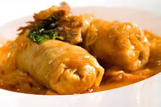

Sarma

Desccription
Sarma, comonly marketed in the English-speaking world as
stuffed grape leaves, stuffed vine leaves or
stuffed cabbage leaves, is a food in Southeastern
Europian and Ottoman cuisine made of vegetable leaves rolled around
a filling of grains, minced meat or both.
The vegetable leaves may be cabbage, patience dock, collard,
grapevine, kale or chard leaves.Sarma is part of the broader
category of stuffed dishes known as dolma.
Ingredients
- Large head of cabbage (1,5 - 2kg)
- 1kg of mixed minced meat
- 2-3 tablespoons of choppet prosciutto
- 15g rice
- 2 onions
- 1 egg
- parsley leaf
- 25g salt
- dried meat
- fresh meat
- laurel, pepper
Steps
- Saute fnely choped onion and meat
- add the rice and simmer for a short time, until it becomes glazed...
- add the minced meat stiri and as soon as it changes colorm remove from
the heat and let it cool
- mix meat, onion, rice, egg, choped parsley leaves, let it stand for a while,
then mix again
-
Seperate the cabbage leaves and cut of the thickenings,
rinse under cold water if necessary
- Twist the sarmas according to your taste, for me the first
ones are big and then smaller, but that doesn't bother me
- Finely chop the leaves and the rest of cabbage and put
part of int on the bottom of the pot, the rest between the sides
- arrange the sarmas in a circle
- cook for approx. 2 hours, add water if necessary.